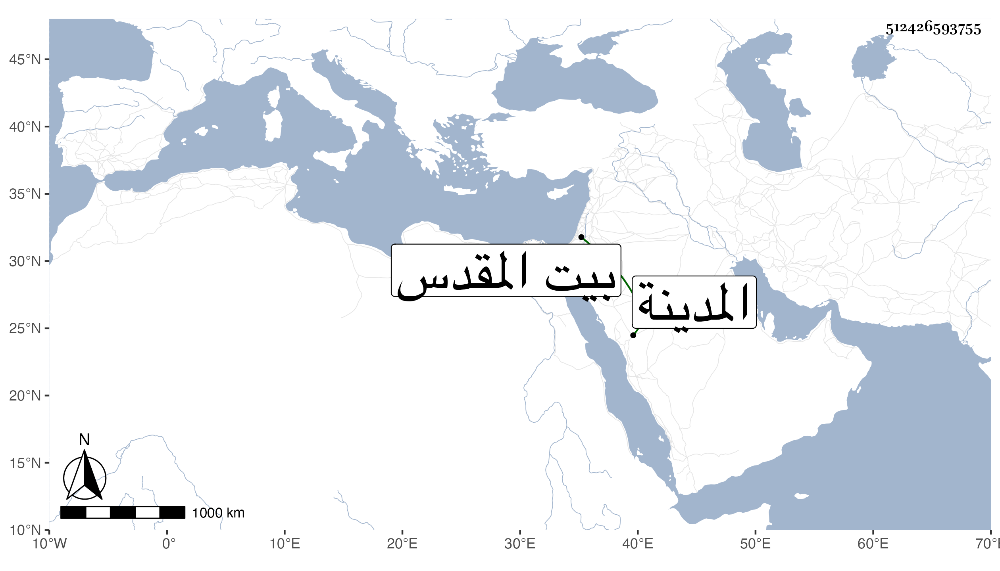

0902Sakhawi.DawLamic.ITO20230111-ara1.EIS1600.512426593755
Biography ID: 512426593755
21
أبو البقاء بن الجيعان البدر محمد بن يحيى بن شاكر بن عبد الغني شقيق المحمدين أبي البركات وصلاح الدين وهو الأكبر . ولد كما كتبه لي بخطه في يوم الأحد ثاني جمادى الأولى سنة سبع وأربعين الموافق لثاني توت . ونشأ في كنف أبويه فحفظ القرآن وعدة كتب واعتنى به أبوه فأسمعه الجزء الأخير من المستخرج على مسلم لأبي نعيم على السيد النسابة وأبي الحسن الأبودري والتاج محمد بن عبد الرحمن العرياني والأخوين الجمال عبد الله والزين عبد الرحمن بني أحمد القمني والمسلسل على السيد والرشيدي والشهاب بن يعقوب والقطب الجوجري والعز التكروري والقرافي وثلاثيات البخاري على هؤلاء الستة وعبد الصمد الزركشي وعبد الملك الطوخي والعماد أبي البركات الهمداني الجابي والشمس بن أنس والمحب ابن الألواحي والنور البلبيسي والجمالين يوسف الدميري وابن أيوب والشهاب الحنبلي الكتبي والكثير منه على الشهاب الشاوي وختمه فقط على الجلال بن الملقن والشهاب الحجازي والمحبين ابن الفاقوسي وابن الألواحي والشمس الرازي والجمال ابن أيوب والبهاء بن المصري وأم هاني الهورينية وبلدانيات السلفي على الأخيرة وقطعة من آخر الأدب المفرد على الزين شعبان بن حجر وأشياء على ومنى ومن ذلك المسلسل بالأولية وبيوم العيد وغير ذلك من تصانيفي كمؤلفي في ختم مسلم وغيرها وأجاز له في سنة خمسين فما بعدها خلق كشيخنا ومن ذكر في أخيه أبي البركات وغيرهم وأقرأه الشهاب السجيني وغيره القرآن وغيره وتدرب بأبيه وغيره من أقربائه في المباشرة واشتغل في العلم على جماعة ممن كان يتردد إليهم وغيرهم كالشرفي يحيى الدماطي والسراج العبادي والجلال البكري والكمال إمام الكاملية والشمس الجوجري وملا على والنور السنهوري في آخرين بل قرأ في التقسيم على العبادي وكذا قرأ على غيره وكثرت مخالطته لغير واحد من الفضلاء وربما قرأ بعض بنيه على بعضهم بحضرته فترقى بذلك كله وتميز بحسن ذكائه وقوة فاهمته في صريحه وإيمائه وجمع بعض التآليف المفيدة واتضع مع العلماء فانتشرت محاسنه العديدة ولو تفرغ لذلك لكان من نوادر زمانه وزواهر وقته وأوانه ولكنه قام من المهمات السلطانية بما لم يبرمه غيره وتودد للخاص والعام فتزايد بره وخيره وقرب العلماء والصالحين ورتب من الخيرات ما لا يقصر فيه عن درجة المفلحين حتى صار وحيدا في معناه فريدا في مقصده ومغزاه وتزاحم الناس على بابه وتصامم عن المكروه وأربابه وصار بيته ملجأ للوافدين وملاذا للقاصدين وكان مع ذلك حين حج وانتفع به الفقراء وعلى المعارض لهم احتج وكذا سافر لكل من المدينة النبوية وبيت المقدس وغيرهما من الأماكن البهية للنظر في المصالح ولم يعدم في سفره ممن يحمله معه من عالم وصالح . وابتنى مدرسة بالزاوية الحمراء بالقرب من قناطر الأوز تقام فيها الجمعة والجماعات وتعلم بها الأوقات بالدرج والساعات إلى غير ذلك من القربات والأيادي المناسبات فالله تعالى يحفظه في دنياه ودنياه ويخفض عدوه الذي بالسوء جاهره وباداه أو أضمره غير ملتفت لعقباه ويختم له بالصالحات ويريه في نفسه وأخيه ما تقربه الأعين من الكرامات والمسامحات وكان قد التمس منى في حياة والده وجده تصنيف كتاب في الأشراف حين صار يتكلم في وقف الأشراف رجاء رغبة الملك في التوجه إليهم ثم بعدهما في الذيل على دول الإسلام للذهبي فأجبته وذكرت من أوصافه في خطبتها ما يحسن إثباته هنا ووقعا عنده موقعا وانتفع بهما الناس فكان بذلك مشاركا في الثواب بدون إلباس . وكذا عنده من تصانيفي جملة ولم تزل المسرات واصلة إلى من قبله في السفر والحضر والمبشرات بلفظه وقلمه متوالية في رفع الكدر جوزى خيرا .
